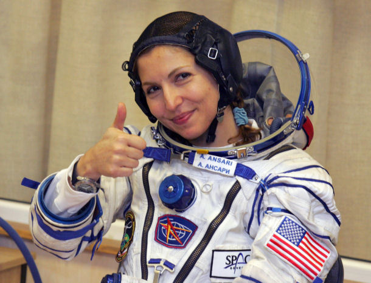

Anousheh Ansari
Anousheh Ansari ( born September 12, 1966) is an Iranian American engineer and co-founder and chairwoman of Prodea Systems. Her previous business accomplishments include serving as co-founder and CEO of Telecom Technologies, Inc. (TTI). The Ansari family is also the title sponsor of the Ansari X Prize. On September 18, 2006, a few days after her 40th birthday, she became the first Iranian and first female Muslim in space. Ansari was the fourth overall self-funded space tourist, and the first self-funded woman to fly to the International Space Station. Her memoir, My Dream of Stars, co-written with Homer Hickam, was published by Palgrave Macmillan in 2010. She is the CEO of the X Prize Foundation
Early life
Born Anousheh Raissyan in Mashhad, Iran, she and her parents moved to Tehran shortly afterward. She witnessed the Iranian Revolution in 1979. She immigrated to the United States in 1984 as a teenager. Apart from her native Persian, she is fluent in English and French, and acquired a working knowledge of Russian for her spaceflight experience. She received her Bachelor of Science degree in electrical engineering and computer science at George Mason University in Fairfax, Virginia, and her master's degree at George Washington University in Washington D.C.
career
After graduation, Raissyan began work at MCI, where she met her future husband, Hamid Ansari. They married in 1991. In 1993, she persuaded her husband and her brother-in-law Amir Ansari to co-found Telecom Technologies Inc., using their savings and corporate retirement accounts, as deregulation happened in the US telecommunications industry. The company was a supplier of softswitch technology that enabled telecom "service providers to enhance system performance, lower operating costs and furnish new revenue opportunities." The company, headquartered in Richardson, Texas, offered products that allowed the integration between existing telecom networks and application-centric, next-generation networks via software switch technology. Telecom Technologies was acquired by Sonus Networks, Inc. in 2001 in a stock-for-stock transaction for 10.8 million shares of Sonus stock. Anousheh Ansari became "a vice president of Sonus and general manager of Sonus' new INtelligentIP division. In 2006, she co-founded Prodea Systems, and is the current chairwoman and CEO. Prodea is a technology and services management company. Prodea is a privately held company formed by the Ansari family with development centers in both Richardson, Texas, and Silicon Valley.
Space
Ansari has expressed that she does not consider herself a "space tourist", and prefers the title of "spaceflight participant". Ansari is a member of the X PRIZE Foundation's Vision Circle, as well as its Board of Trustees.[16] Along with her brother-in-law, Amir Ansari, she made a multimillion-dollar contribution to the X PRIZE foundation on May 5, 2004, the 43rd anniversary of Alan Shepard's sub-orbital spaceflight. The X PRIZE was officially renamed the Ansari X PRIZE in honor of their donation. As demonstrated by her commitment to the X PRIZE and through presentations at Space Enthusiast conferences, Ansari is a spokesperson for the "privatization of space", a process enabling commercially viable companies to government-independently send equipment and/or people into space for exploration and other purposes. The Ansari family investment firm, also named Prodea, has announced a partnership with Space Adventures, Ltd. and the Federal Space Agency of the Russian Federation (FSA) to create a fleet of suborbital spaceflight vehicles (the Space Adventures Explorer) for global commercial use.
Other activities and public appearances
Ansari participated as a speaker at the 2010 Honeywell Leadership Academy with Homer Hickam at United States Space Camp in Huntsville, Alabama. In 2009, Ansari was featured in the documentary film Space Tourists by independent Swiss filmmaker Christian Frei about billionaires who paid to ride to the International Space Station aboard Russian spacecraft. The DVD of the film was released in 2011. She served as the commencement speaker at and received an Honorary Doctorate of Science from Utah Valley University on April 25, 2013. On February 26, 2017, she and Firouz Naderi represented Iranian filmmaker Asghar Farhadi at the 89th Academy Awards and accepted the Academy Award for Best Foreign Language Film for The Salesman on Farhadi's behalf. Farhadi did not attend the ceremony due to his opposition to President Trump's immigration ban applying to seven Muslim countries including Iran. Farhadi selected Ansari and Naderi as his representatives because both are successful Iranian-Americans who immigrated to the US. Ansari has served on the boards of directors for Make-a-Wish Foundation of North Texas and Collin County Children's Advocacy Center. She has been active with several nonprofit organizations, including the nonprofit Iranian American Women Foundation organization. Other non-profit organizations include Ashoka in its support of social entrepreneurs.
|  | |
| Born | June 24, 1983 (age 37) Bad Nauheim, West Germany |
|---|---|
| Nationality | Iranian American |
| Citizenship | Dual Iranian-American |
| Education | Electrical engineering and computer science |
| Alma mater | George Mason University George Washington University |
| Occupation | Businessperson |
| Title | CEO of X Prize Foundation |
| Spouse(s) | Hamid Ansari (m. 1991) |
| Relatives | Amir Ansari (Brother-in-law) |
| Status | Retired |
| Occupation | Electrical Engineer |
| Space career | Cosmonaut |
| Missions | Soyuz TMA-9/8 |
| Website | anoushehansari.com |